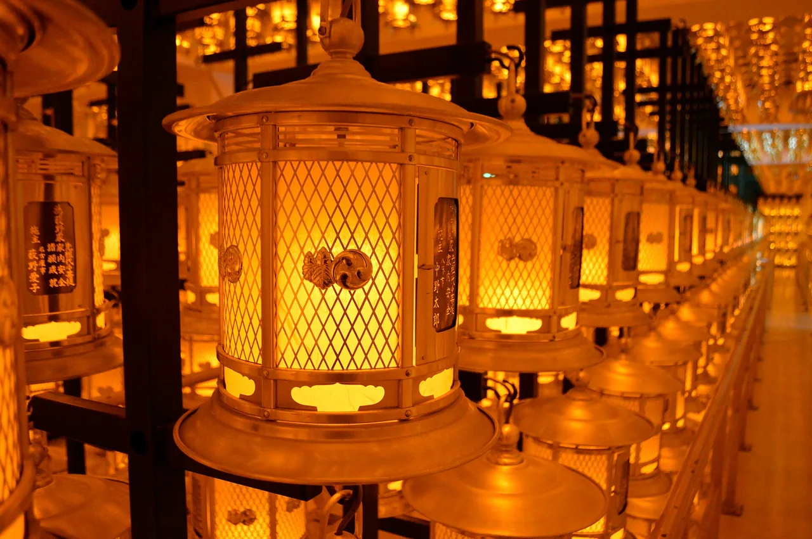

Wakayama Travel Guide for Japanese Learners
Sacred pilgrimage mountains and dramatic coastal hot springs.

Wakayama holds the spiritual heart of Kōyasan (Mount Kōya) and the Kumano Kodō pilgrimage routes, both UNESCO sites, plus a rugged southern coast.
History & background
Wakayama (和歌山) is sacred ground: Kōbō Daishi founded the Kōyasan (高野山) monastery in 816, and the Kumano (熊野) shrines anchor pilgrimage routes walked for over a millennium — both UNESCO-listed.
What to see
- Kōyasan temple town and Okunoin
- Kumano Kodō pilgrimage trails (UNESCO)
- Nachi Falls and shrine
- Shirahama beach and onsen
Hidden gems
- Kumano Hongū Taisha sits deep in a river valley where ancient pilgrims bathed; fewer crowds than Nachi, equally sacred.
- Tanabe Castle ruins and gardens offer quiet riverside walks with seasonal flowers and views over the town below the mountains.
- Shingu's Hayatama Taisha stands at the river mouth where the Kumano Kodō meets the coast—fewer visitors, stunning water views.
Some links above are affiliate links. We may earn a commission at no extra cost to you. We only list services we'd use ourselves.
What to eat
Wakayama ramen and umeboshi (pickled plums).
Getting there & when to go
Getting there: Kōyasan is ~2h from Osaka by train and cablecar.
Best time: Spring–autumn for hiking the Kumano Kodō; any season for Kōyasan's calm.
When to go — season by season
Spring through autumn suit the Kumano Kodō (熊野古道) trails. Kōyasan is profound in any season, magical under snow; Shirahama's (白浜) beaches draw summer crowds.
Local culture
Wakayama's fishing villages still dry squid and fish on rooftops in autumn; you'll see wooden racks stretched across harbor streets. Local fishmongers sell these dried goods fresh, and restaurants feature them in soup stocks—a taste of centuries-old preservation craft still alive.
The prefecture has deep roots in ume (plum) farming; entire hillsides turn white with blossoms in March. Families visit orchards to pick fruit in June, then pickle it at home through July—a domestic ritual so common that supermarkets stock dedicated ume-making kits during season.
A suggested visit
Take the train and cablecar to Kōyasan and stay overnight in a temple lodging (shukubō) to join dawn prayers and walk the lantern-lit Okunoin (奥之院). Hikers can add a stretch of the Kumano Kodō.
Seasonal tip: October and November bring peak hiking conditions for Kumano Kodō with cool temps and low humidity, but also peak pilgrim crowds—book mountain lodges (山小屋) weeks ahead if you plan weekends.
Local etiquette: When visiting Kōyasan's inner temple district at dusk, keep voices low and avoid photography near active ritual spaces; monks perform evening ceremonies and expect respectful silence from guests in those areas.
Stay overnight in a Kōyasan temple lodging (shukubō) to join morning prayers.
Some links above are affiliate links. We may earn a commission at no extra cost to you. We only list services we'd use ourselves.
Common questions
Q. How long does it take to reach Kōyasan from Osaka?
A. About 2 hours by train and cablecar from Osaka. Book accommodation in the temple town itself to experience the monks' pre-dawn chanting and calm mountain atmosphere year-round.
Q. What's the best time to hike the Kumano Kodō pilgrimage trails?
A. Spring through autumn offers ideal hiking conditions on these UNESCO routes. The trails are steep and remote, so sturdy footwear and early morning starts avoid crowds and afternoon rain.
Q. What should I eat in Wakayama?
A. Try Wakayama ramen and umeboshi (pickled plums), local specialties. Umeboshi aids digestion during long hikes—many pilgrims carry them on the Kumano Kodō for this reason.